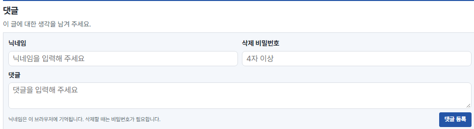
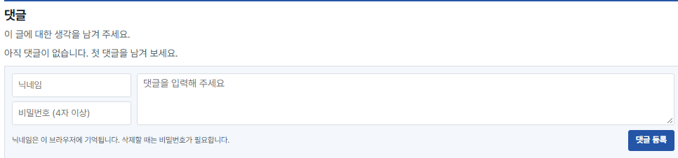
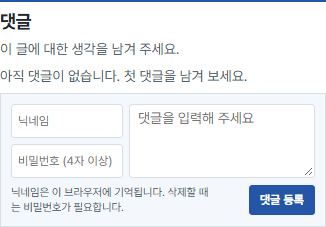

Tracefolio REPORTS & ISSUES
Tracefolio REPORTS & ISSUES이전·다음 버튼 제거와 댓글 입력란 두 열 압축
검증 대기글 상세의 이전·다음 버튼을 제거하고 닉네임·비밀번호를 왼쪽 두 줄, 댓글을 오른쪽에 배치했습니다.
작업 결과
e290a2b를 main에 푸시했고 운영 글에서 새 입력란과 이전·다음 버튼 제거를 확인했습니다.
변경 내용
적용 내용
articleFooter의 이전·다음 버튼 생성과 반환을 제거했습니다. 댓글은 comments-compose 공통 그리드에 닉네임·삭제 비밀번호를 왼쪽 170px, 댓글칸을 나머지 폭으로 배치했습니다. 입력칸 34px 두 개와 간격 6px에 맞춰 댓글칸은 74px입니다. 모바일 왼쪽 폭은 112px이며 동일한 두 열을 유지합니다. 접근성 레이블은 보존하되 화면에서는 placeholder로 구분합니다. 등록 버튼과 보조 안내는 아래 한 줄에 압축했습니다. 기존 댓글 등록과 삭제 로직은 수정하지 않았습니다.



댓글 렌더 함수 전체
export function renderComments(post) {
return `<section class="comments" aria-labelledby="comments-title" data-comments data-post="${post}">
<link rel="stylesheet" href="/comments.css?v=compact-compose">
<script type="module" src="/comments.js"></script>
<header class="comments-heading">
<h2 id="comments-title">댓글</h2>
<p>이 글에 대한 생각을 남겨 주세요.</p>
</header>
<noscript><p>댓글을 이용하려면 JavaScript를 켜 주세요.</p></noscript>
<p class="comments-status" data-load-status role="status"></p>
<ol class="comments-list" aria-label="댓글 목록" hidden></ol>
<button class="comments-secondary" type="button" data-more hidden>댓글 더 보기</button>
<button class="comments-secondary" type="button" data-retry hidden>댓글 다시 불러오기</button>
<form class="comments-form" autocomplete="off" hidden>
<div class="comments-compose">
<div class="comments-fields">
<label><span class="comments-field-label">닉네임</span><input name="nickname" required maxlength="24" placeholder="닉네임"></label>
<label><span class="comments-field-label">삭제 비밀번호</span><input name="password" type="password" autocomplete="new-password" required minlength="4" maxlength="128" placeholder="비밀번호 (4자 이상)"></label>
</div>
<label class="comments-message"><span class="comments-field-label">댓글</span><textarea name="body" required maxlength="2000" rows="2" placeholder="댓글을 입력해 주세요"></textarea></label>
</div>
<div class="comments-actions">
<p>닉네임은 이 브라우저에 기억됩니다. 삭제할 때는 비밀번호가 필요합니다.</p>
<button class="comments-primary" type="submit">댓글 등록</button>
</div>
</form>
<p class="comments-status" data-action-status role="status"></p>
<dialog class="comments-dialog" aria-labelledby="comment-delete-title">
<form autocomplete="off">
<h3 id="comment-delete-title">댓글 삭제</h3>
<label>삭제 비밀번호<input name="password" type="password" autocomplete="off" required minlength="4" maxlength="128"></label>
<p class="comments-status" role="status"></p>
<div class="comments-actions">
<button class="comments-secondary" type="button" data-cancel>취소</button>
<button class="comments-primary" type="submit">삭제</button>
</div>
</form>
</dialog>
</section>`;
}
검증
운영 글을 headless Chrome으로 열어 production-new=true를 확인했습니다. 1440px에서 입력칸 170×34 두 개, 댓글칸 766×74, 모바일390px에서 입력칸112×34, 댓글칸186×74를 확인했습니다. 두 화면 모두 overflow=false, pagination=false입니다. 캡처는 Chrome 자체 캡처 API를 사용했습니다. 변경 전 화면은 이전 커밋의 템플릿과 CSS로 동일 글에서 재구성했습니다. build.mjs와 template.mjs의 node --check 통과. 댓글을 실제 등록하거나 삭제하지 않았습니다. 테스트 파일 추가 없음.
남은 사항
글 등록·삭제 API는 변경하지 않아 실제 데이터 쓰기는 수행하지 않았습니다. 지침 변경 없음: 기존 공통 폭과 모바일 확인 기준으로 충분합니다.
작업 시간
- 제안 시간: 3~5분, 시작 2026-11-11 19:15:04 KST
- 실제로 완료된 시간: 운영 화면 확인 19:17 KST, 약 2분. 보고서 공개 확인 별도.
- XERJ: 미사용 — 소스, 실제 운영 DOM 위치·크기와 Chrome 캡처로 확인했습니다.